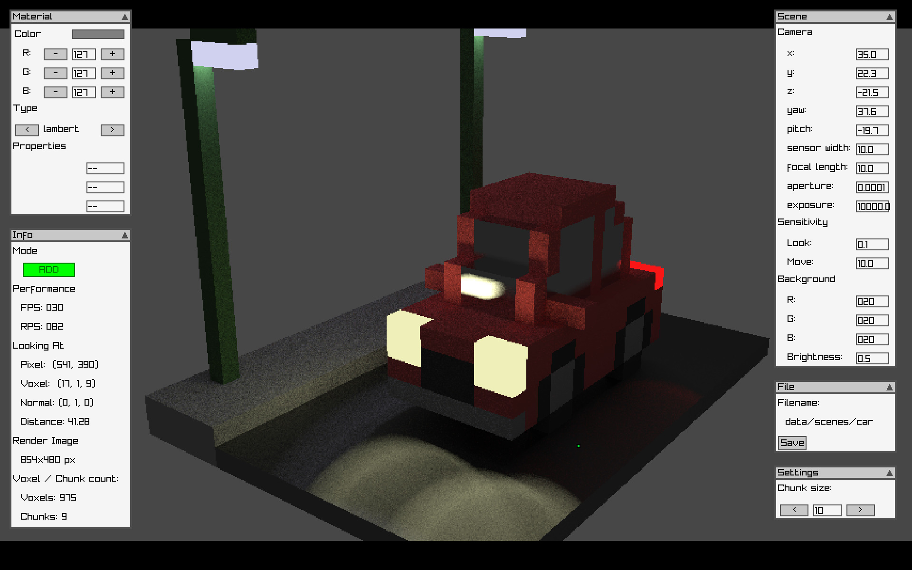
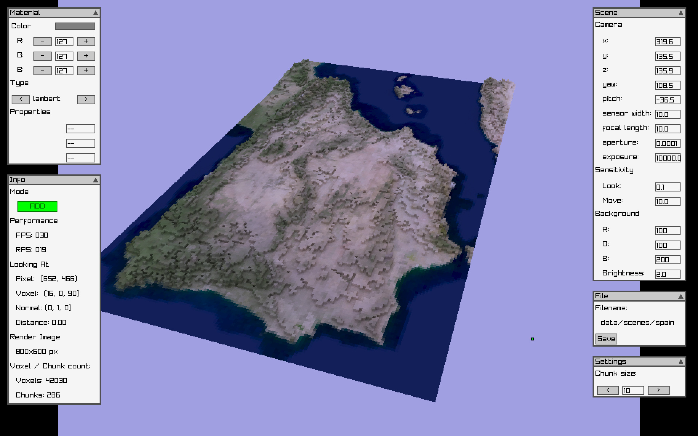
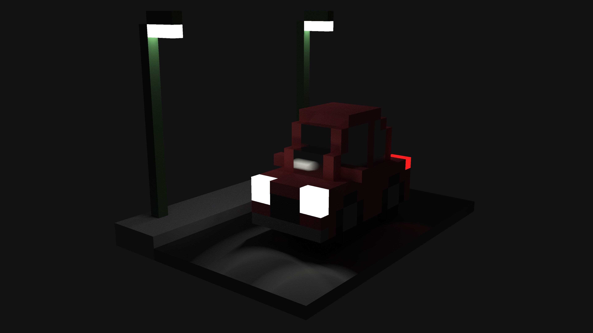
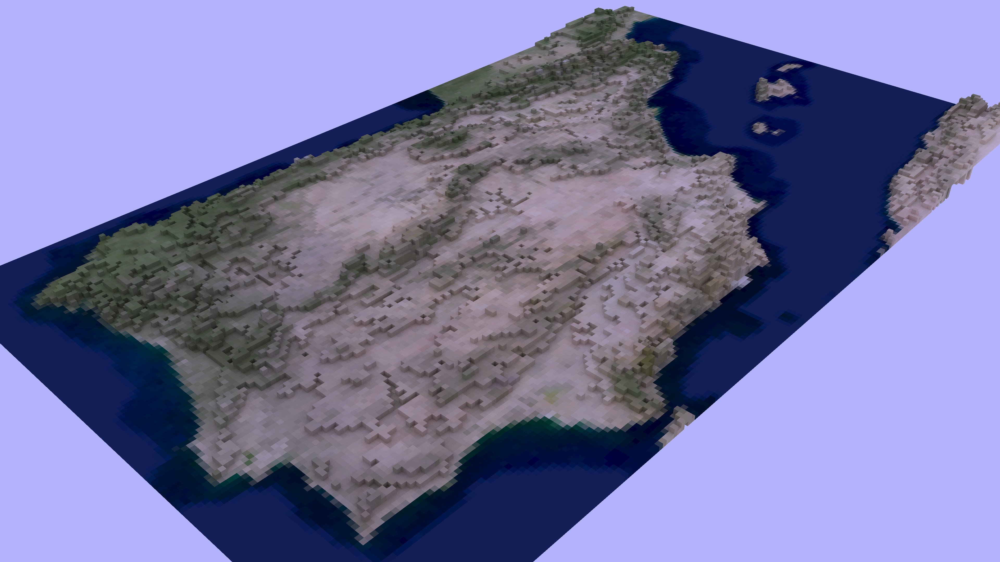
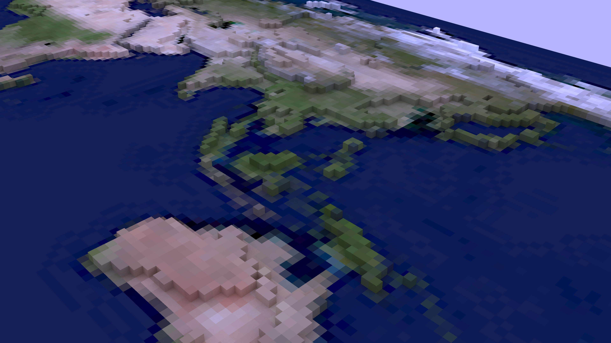

VoxRen is a voxel-based pathtracer with support for real-time editing of the scene and multiple material types. By using GPU acceleration (with OpenCL), the pathtracing takes place in real-time. The program also contains a full GUI that helps the user easily modify the scene, and a Python module was also written so that a scene can also be easily created using scripts.
All GPU-side code was written using OpenCL so that it would run on a wider range of hardware, like my laptop (with Intel Iris integrated graphics), compared to CUDA. On the other hand, most CPU-side code (the GUI and various other processes) was written in C, except the scene-generation code that was written in Python.
The GUI was implemented using raylib, a library that provides a large number of graphics related features aimed at game development. All GUI components (windows, buttons, text-inputs) were implemented from scratch using basic features from this library. Although the GUI is far from perfect, building an entire GUI system from scratch taught me a lot about GUIs and graphics in general. This is a screenshot of the GUI in action:
The GUI allows the user to perform a number of actions such as:
- Select a material type, color, and properties, and place it in the scene using the mouse
- Set various camera parameters, such as position orientation, exposure, etc
- Change the color and brightness of the background
- Change the movement speed and mouse sensitivity
And many more.
The Python module can be used in scripts to easily create large scenes, to visualize some mathematical model, or to visualize data. For example using heightmap data of the Earth, I was able to make a 3D map of Spain:
Finally, here are some renders I made using VoxRen:
  